El sexagenario comercio barcelonés cerrará sus puertas el próximo día 16.
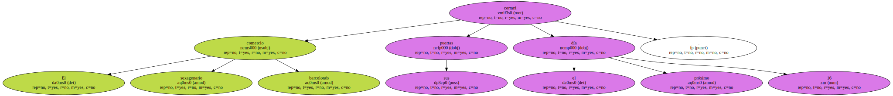La empresa prevé abrir varias tiendas más pequeñas repartidas por la ciudad.
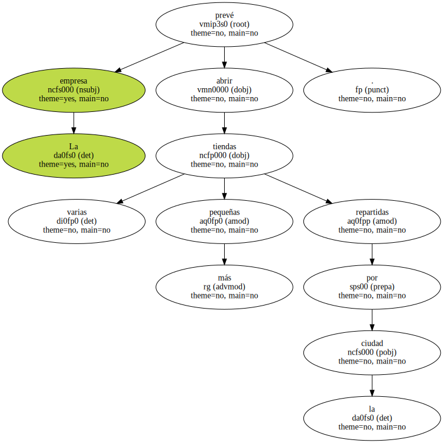El propietario del solar indaga si puede levantar dos plantas más para un hotel.
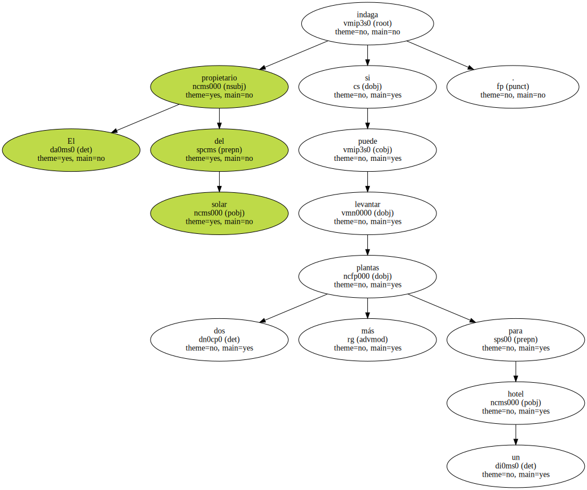Los grandes almacenes Sepu ( Sociedad Española de Precios Unicos ) pondrán fin el próximo día 16 a 65 años de historia en el número 120 de la Rambla , pero renacerán a partir de octubre , en una nueva estrategia comercial de la empresa , en diversos locales de tamaño más modesto repartidos por distintos puntos de la ciudad.
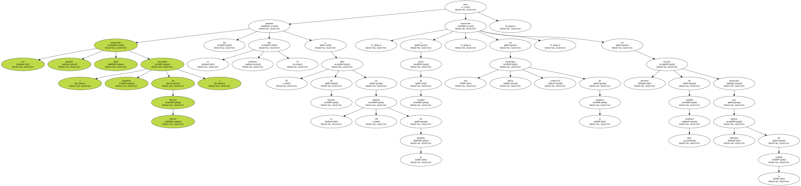Por el momento , el Sepu acondiciona ya un local de entre 200 y 300 metros cuadrados de superficie - - en la Rambla son 2.500 en la calle de Sants , y proyecta otras dos sucursales en la Rambla de Catalunya y en Gran de Gràcia.

" Dejar la Rambla será doloroso desde el punto de vista sentimental , porque formamos parte de ella , y casi de la ciudad " , reconoce Alberto Theilaker , consejero delegado de la empresa.
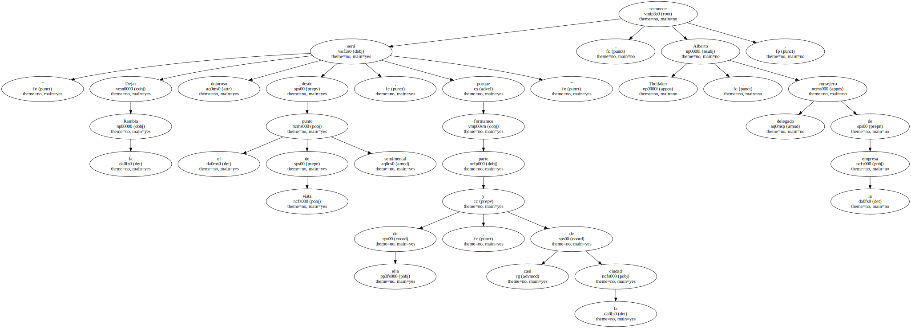Su reflexión , en la práctica , abre la incógnita sobre qué sucederá a partir del 16 de septiembre con el solar del 120 de la Rambla.
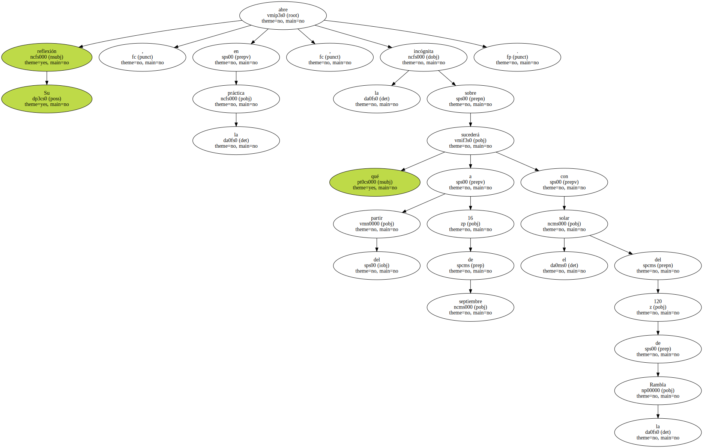Se trata de una pieza excelentemente situada , junto a uno de los edificios más bellos del paseo , el Palau Moja , y sobre la que el grupo municipal de IC-V ya ha planteado una propuesta a Joan Clos : que el Ayuntamiento de Barcelona la compre en colaboración con la Generalitat para poder derribar así el primer piso , que oculta parcialmente el Palau Moja , y se devuelva al lugar el diseño de balcón sobre la Rambla que tenía antes de 1935.
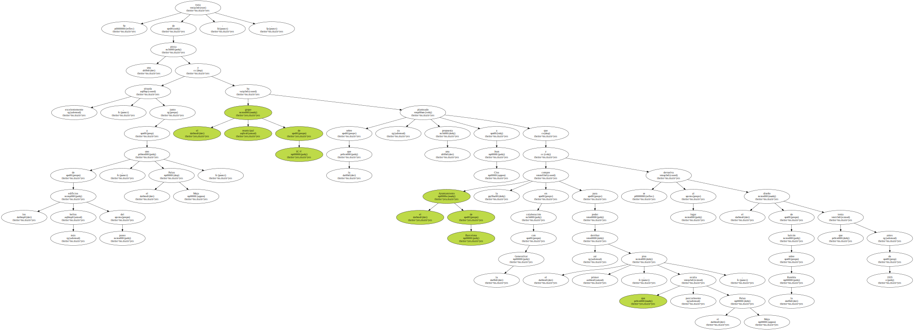La operación , sin embargo , puede no tener futuro por ser demasiado cara.
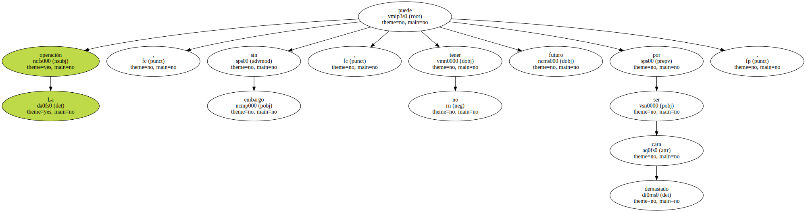El solar es propiedad del marqués de Comillas , que a mediados de año envió un representante a los servicios municipales de Urbanismo para sondear la viabilidad de levantar dos plantas más en el inmueble y poder así construir un hotel allí.
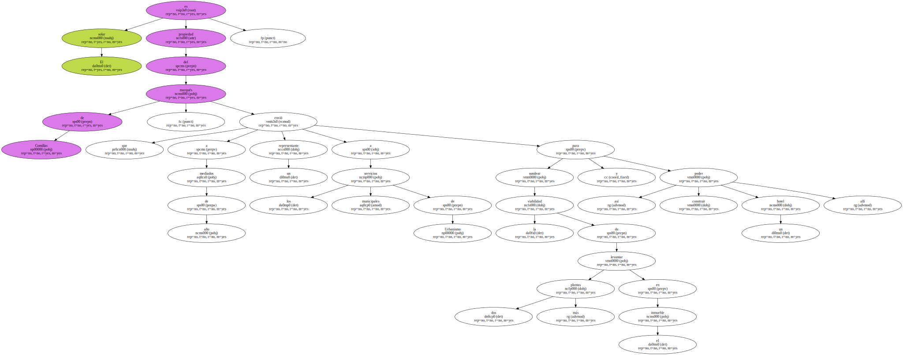Desde entonces no se ha presentado ningún proyecto ni se ha pedido ningún permiso municipal para reaprovechar el actual local para otro uso.
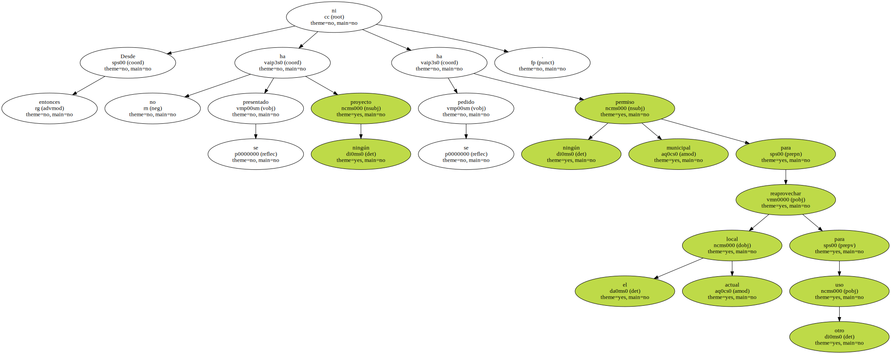Al número 120 , por lo tanto , le aguardan al menos varios meses en blanco , pero , en cualquier caso , se trata de un caramelo en pleno corazón de la ciudad que fuentes municipales sostienen que sería muy caro de comprar , aunque fuera con el esfuerzo conjunto de las dos administraciones.
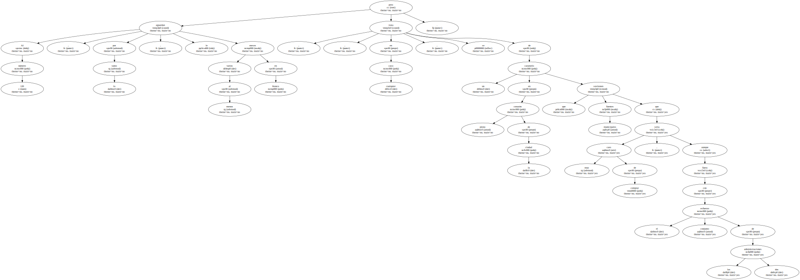Descuentos del 20%.
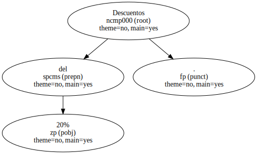El Sepu , mientras tanto , apura sus últimos días en la Rambla con descuentos del 20% sobre precios ya rebajados y afronta su cambio de ubicación en Barcelona como una estrategia que le permita renacer.
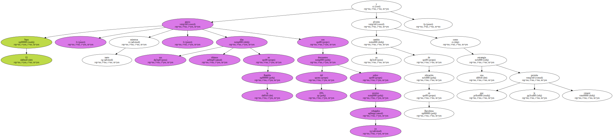" Con las nuevas tiendas queremos tener más posibilidades en el mercado " , apunta el consejero delegado de la empresa familiar propiedad de Carlos y Myriam Goetschel.
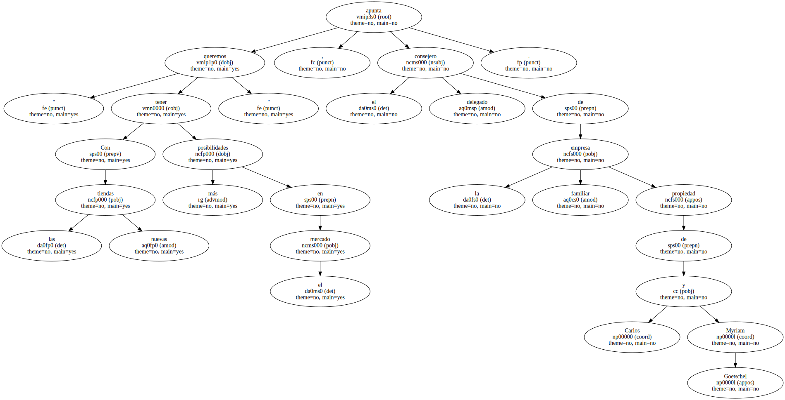La cadena de pequeños almacenes que Sepu aspira a tener repartidos limitarán su oferta a los artículos de confección , y de sus actuales 30 empleados sólo unos 15 proseguirán vinculados al negocio a partir de este mes.
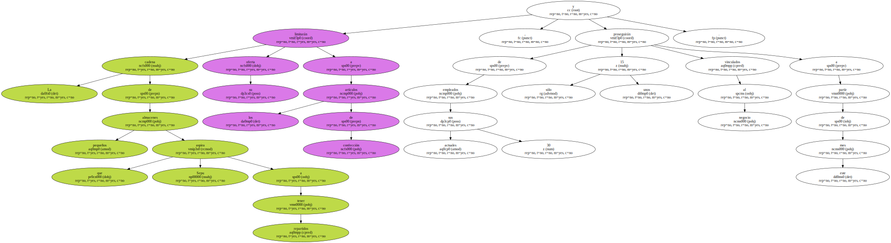